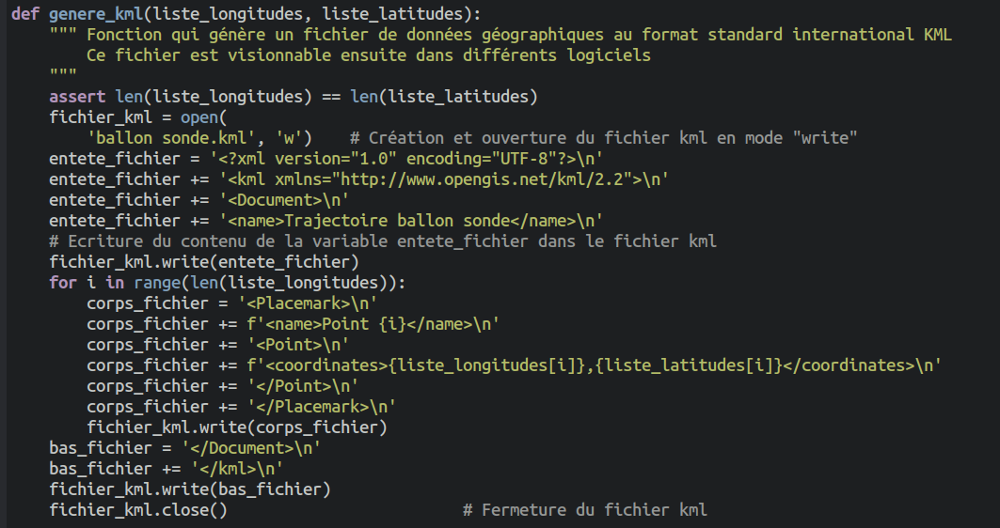

Épreuve Pratique BNS 2026⚓︎
Vous pouvez retrouver ici les sujets publiés le 26/03/2026, et mis à jour le 30/04/2026.
Lors de l'épreuve, l'examinateur évaluera selon 4 compétences :
- Programmation
- Autonomie
- Compréhension
- Oral
Chaque compétence sera jugée ainsi :
- Insuffisant
- Fragile
- Suffisant
- Maîtrisé
Le logiciel de saisie des notes convertira ensuite ces compétences en une note sur 20.
Sujet 1
Correction Q1
Si la liste originale est [3, 5, 0, 6], la liste obtenue par codage RLE est [1, 3, 1, 5, 1, 0, 1, 6], qui est 2 fois plus longue. Donc non, la liste obtenue par codage RLE n'est pas forcément de longueur inférieure ou égale.
Correction Q2
def decodage_rle(liste_rle):
'''Renvoie la liste d'octets obtenue à partir de la liste liste_rle obtenue
par compression RLE'''
lst = []
for i in range(0, len(liste_rle), 2):
for k in range(liste_rle[i]):
lst.append(liste_rle[i+1])
return lst
def test_codage():
assert codage_rle([255, 255, 0, 255, 255, 255]) == [2, 255, 1, 0, 3, 255]
assert decodage_rle([2, 255, 1, 0, 3, 255]) == [255, 255, 0, 255, 255, 255]
assert decodage_rle([4, 85]) == [85, 85, 85, 85]
assert decodage_rle([1, 9, 1, 250, 1, 128]) == [9, 250, 128]
assert decodage_rle([1, 0]) == [0]
Correction Q3
On constate que, si tout se passe bien pour l'image bac_nsi_32.png, l'image bac_nsi_256.png.dec.png obtenue après encodage/décodage de l'image bac_nsi_256.png présente un décalage de l'écriture.
Correction Q4
Il faut modifier la fonction codage_rle pour faire en sorte qu'elle prenne en compte les valeurs dont le nombre dépasse 255. Il suffit de faire plusieurs «paquets» de 255 de cette valeur.
def codage_rle(liste_octets):
'''Renvoie une liste d'octets obtenue par compression RLE'''
liste_rle = []
i = 0
while i < len(liste_octets):
c = liste_octets[i]
k = 1
while i+k < len(liste_octets) and liste_octets[i+k] == c:
k += 1
q = k // 255
r = k % 255
for _ in range(q):
liste_rle.append(255)
liste_rle.append(c)
if r != 0:
liste_rle.append(r)
liste_rle.append(c)
i += k
return liste_rle
Autre solution (plus simple !) proposée par Franck Chambon :
def codage_rle(liste_octets):
'''Renvoie une liste d'octets obtenue par compression RLE'''
liste_rle = []
i = 0
while i < len(liste_octets):
c = liste_octets[i]
k = 1
while i+k < len(liste_octets) and liste_octets[i+k] == c and k < 255:
k += 1
liste_rle.append(k)
liste_rle.append(c)
i += k
return liste_rle
Sujet 2
Correction Q1
def salaire_moyen_condition(employes, champ, valeur):
'''Renvoie le salaire moyen des employes ayant val comme valeur associée
au champ donné en argument.
Si le nombre d'employés considéré est nul, cette fonction renvoie None'''
s = 0
n = 0
for employe in employes:
if employe[champ] == valeur:
s += employe['salaire']
n += 1
if n == 0:
return None
return s/n
Correction Q2
def effectif_par_sexe(employes):
nf, nh = 0, 0
for employe in employes:
if employe['sexe'] == 'F':
nf += 1
else:
nh += 1
return {'F':nf, 'M':nh}
Correction Q3
- Le calcul de
moy_fva renvoyer une erreur caremployesest mis entre guillements. - De plus, le calcul final est faux puisqu'il fait simplement la différence entre
moy_hetmoy_f.
def calcul_ecart_sexe(employes):
'''Renvoie l'écart de salaire en pourcentage pour les femmes
par rapport aux hommes'''
if effectif_par_sexe(employes)['F'] == 0 or effectif_par_sexe(employes)['M'] == 0:
return None
moy_h = salaire_moyen_condition(employes, 'sexe', 'M')
moy_f = salaire_moyen_condition(employes, 'sexe', 'F')
return (moy_h - moy_f) / moy_h * 100
def test_calcul_ecart_sexe():
assert calcul_ecart_sexe([{'experience': 5, 'etudes': 3, 'sexe': 'F', 'salaire': 2400}]) == None
assert calcul_ecart_sexe(donnees.employes) >= 0 and calcul_ecart_sexe(donnees.employes) <= 100
Correction Q4
>>> salaire_par_proximite(donnees_completes.employes, {'experience': 3, 'etudes': 3, 'sexe': 'F'})
2229.6666666666665
>>> salaire_par_proximite(donnees_completes.employes, {'experience': 3, 'etudes': 3, 'sexe': 'M'})
2406.0
Une bonne fonction distance serait donc :
def distance(e1, e2):
'''Renvoie la mesure de distance entre deux personnes.'''
s = 0
s = s + (e1['experience'] - e2['experience'])**2
s = s + (e1['etudes'] - e2['etudes'])**2
return sqrt(s)
Sujet 3
Correction Q1
def est_bissextile(n):
if n % 400 == 0:
return True
elif n % 4 == 0 and n % 100 != 0:
return True
else:
return False
Correction Q2
def determiner_phase(n):
assert n <= 28 and n >= 1
if n <= 5:
return 1
elif n <= 13:
return 2
elif n == 14:
return 3
else:
return 4
Correction Q3
def test_ajouter_jours():
assert ajouter_jours((7, 9, 2025), 3) == (10, 9, 2025)
assert ajouter_jours((29, 8, 2025), 3) == (1, 9, 2025)
#pour tester le changement de mois sur un mois à 31 jours
assert ajouter_jours((29, 9, 2025), 3) == (2, 10, 2025)
#pour tester le changement de mois sur un mois à 30 jours
assert ajouter_jours((31, 12, 2025), 1) == (1, 1, 2026)
#pour tester un changement d'année
assert ajouter_jours((28, 2, 2024), 3) == (2, 3, 2024)
#pour tester le changement de mois sur une année bissextile
assert ajouter_jours((28, 2, 2025), 3) == (3, 3, 2025)
#pour tester le changement de mois sur une année non-bissextile
Correction Q4
L'erreur qui apparait
datetime(
ValueError: month must be in 1..12
En effet la documentation de iCalendar nous dit que la date doit être écrite au format AAAAMMJJ.
Or, la ligne de code
date = str(annee)+str(mois) +str(jour)
Pour résoudre ce problème, il faut remplacer cette ligne par :
date = str(annee)+'{:02d}'.format(mois) + '{:02d}'.format(jour)
Remarque : le formatage des chaînes de caractères n'est pas au programme...
sujet 4
Correction Q1
def croissance_moyenne(plantes):
if plantes == []:
return None
s = 0
for plante in plantes:
s += plante.croissance
return s / len(plantes)
def test_croissance_moyenne():
assert croissance_moyenne([]) == None
assert croissance_moyenne(plantes) == 79.0
Correction Q2
def dictionnaire_mesure(plantes, mesures):
d = {}
for m in mesures:
if m['plante'] in d:
d[m['plante']].append(m)
else:
d[m['plante']] = [m]
for p in plantes:
if p.nom not in d:
d[p.nom] = []
return d
def test_dictionnaire_mesure():
assert dictionnaire_mesure(plantes, mesures)['Fougère'] == []
Correction Q3
Le problème vient de l'instruction remove qui est utilisée dans la boucle et qui modifie la liste en cours de parcours.
Par exemple, le code :
lst = [11, 13, 8, 4, 11, 3]
for k in lst:
if k > 10:
lst.remove(k)
print(lst)
[13, 8, 4, 3] car la suppression du 11 a créé un décalage.
Correction Q4
Pour éviter le problème précédent, il faut parcourir une copie de liste_mesures.
def purger_mesures_extremes(liste_mesures):
'''
Supprime de la liste toutes les mesures dont la température
n'est pas comprise entre 20 et 25°C inclus.
'''
copy_liste_mesures = liste_mesures.copy()
for mesure in copy_liste_mesures:
if mesure['temperature'] < 20 or mesure['temperature'] > 25:
liste_mesures.remove(mesure)
return liste_mesures
sujet 5
Correction Q1
def total_simple(empreinte):
'''Fonction qui renvoie l'empreinte carbone totale d'un dictionnaire associant
une empreinte carbone à des noms de catégories'''
d = chargement_json(empreinte)
total = 0
for key in d:
total += d[key]
return total
def empreinte_totale_ada():
print(total_simple('empreinte_ada_agr.json'))
Correction Q2
def total_rec(empreinte):
'''Fonction récursive qui renvoie l'empreinte carbone totale représentée
par un dictionnaire dont les valeurs peuvent aussi être des dictionnaires'''
total = 0
for key in empreinte:
if not est_dictionnaire(empreinte[key]):
total += empreinte[key]
else:
total += total_rec(empreinte[key])
return total
Correction Q3
Il y a une erreur dans l'énoncé, la fonction renvoie bien True.
Ceci dit la fonction n'est pas correcte, car sa structure récursive empêche de parcourir la totalité du dictionnaire. Si un valeur supérieure à 1000 est à la fin du dictionnaire, elle n'est pas détectée.
Version corrigée (code de Cédric Gouygou):
def alerte_valeur_aberrante(empreinte, limite):
'''
Fonction censée déterminer si au moins une valeur du dictionnaire
dépasse strictement la limite donnée.
'''
valeur_aberrante = False
for categorie, valeur in empreinte.items():
if est_dictionnaire(valeur):
valeur_aberrante = valeur_aberrante or alerte_valeur_aberrante(valeur, limite)
else:
if valeur > limite:
valeur_aberrante = True
return valeur_aberrante
Correction Q4
Solution proposée par Vincent Guenanff
def test_alerte_valeur_aberrante():
# que des valeurs simples dans le dictionnaire
dico1 = {'a': 15, 'b': 12, 'c': 14, 'd': 8}
assert alerte_valeur_aberrante(dico1, 20) == False, 'test simple, sans valeur aberrante'
dico2 = {'a': 25, 'b': 12, 'c': 14, 'd': 8}
assert alerte_valeur_aberrante(dico2, 20) == True, 'test simple, avec valeur aberrante'
dico3 = {'a': 15, 'b': 22, 'c': 14, 'd': 8}
assert alerte_valeur_aberrante(dico3, 20) == True, 'test simple, avec valeur aberrante'
dico4 = {'a': 15, 'b': 12, 'c': 24, 'd': 8}
assert alerte_valeur_aberrante(dico4, 20) == True, 'test simple, avec valeur aberrante'
dico5 = {'a': 15, 'b': 12, 'c': 14, 'd': 28}
assert alerte_valeur_aberrante(dico5, 20) == True, 'test simple, avec valeur aberrante'
# avec un dictionnaire imbriqué
dico1 = {'a': {'a1': 15, 'a2': 4}, 'b': 12, 'c': 14, 'd': 8}
assert alerte_valeur_aberrante(dico1, 20) == False, 'test avec une imbrication, sans valeur aberrante'
dico2 = {'a': {'a1': 25, 'a2': 4}, 'b': 12, 'c': 14, 'd': 8}
assert alerte_valeur_aberrante(dico2, 20) == True, 'test avec une imbrication, avec valeur aberrante dans l'imbrication'
dico3 = {'a': {'a1': 15, 'a2': 24}, 'b': 12, 'c': 14, 'd': 8}
assert alerte_valeur_aberrante(dico3, 20) == True, 'test avec une imbrication, avec valeur aberrante dans l'imbrication'
dico4 = {'a': {'a1': 15, 'a2': 4}, 'b': 12, 'c': 24, 'd': 8}
assert alerte_valeur_aberrante(dico4, 20) == True, 'test avec une imbrication, avec valeur aberrante hors l'imbrication'
dico5 = {'a': 15, 'b': 22, 'c': {'c1': 14, 'c2': 19}, 'd': 8}
assert alerte_valeur_aberrante(dico5, 20) == True, 'test avec une imbrication, avec valeur aberrante hors l'imbrication'
dico6 = {'a': 15, 'b': 12, 'c': {'c1': 14, 'c2': 29}, 'd': 8}
assert alerte_valeur_aberrante(dico6, 20) == True, 'test avec une imbrication, avec valeur aberrante dans l'imbrication'
dico7 = {'a': 15, 'b': 12, 'c': {'c1': 14, 'c2': 19}, 'd': 28}
assert alerte_valeur_aberrante(dico7, 20) == True, 'test avec une imbrication, avec valeur aberrante hors l'imbrication'
# avec plusieurs dictionnaires imbriqué
dico1 = {'a': {'a1': 15, 'a2': 4}, 'b': 12, 'c': {'c1': 14, 'c2': 19}, 'd': 8}
assert alerte_valeur_aberrante(dico1, 20) == False, 'test avec une imbrication, sans valeur aberrante'
dico1 = {'a': {'a1': 15, 'a2': 4}, 'b': 12, 'c': {'c1': 14, 'c2': 19}, 'd': 8}
dico2 = {'a': {'a1': 15, 'a2': 24}, 'b': 12, 'c': {'c1': 14, 'c2': 19}, 'd': 8}
assert alerte_valeur_aberrante(dico2, 20) == True, 'test avec plusieurs imbrications, avec valeur aberrante dans une première imbrication'
dico3 = {'a': {'a1': 15, 'a2': 4}, 'b': 12, 'c': {'c1': 24, 'c2': 19}, 'd': 8}
assert alerte_valeur_aberrante(dico3, 20) == True, 'test avec plusieurs imbrications, avec valeur aberrante dans une seconde imbrication'
dico4 = {'a': {'a1': 15, 'a2': 4}, 'b': 22, 'c': {'c1': 14, 'c2': 19}, 'd': 8}
assert alerte_valeur_aberrante(dico4, 20) == True, 'test avec plusieurs imbrications, avec valeur aberrante hors des imbrications'
# avec des imbrications à plusieurs niveaux
dico1 = {'a': 15,
'b': {'b1': 12,
'b2': {'b21': 1, 'b22': 18, 'b23': 10},
'b3': 19,
'b4': {'b41': 16, 'b42': 0}},
'c': 14,
'd': 8}
assert alerte_valeur_aberrante(dico1, 20) == False, 'test imbrication à 2 niveaux, sans valeur aberrante'
dico2 = {'a': 15,
'b': {'b1': 12,
'b2': {'b21': 1, 'b22': 18, 'b23': 10},
'b3': 19,
'b4': {'b41': 16, 'b42': 0}},
'c': 14,
'd': 28}
assert alerte_valeur_aberrante(dico2, 20) == True, 'test imbrication à 2 niveaux, avec valeur aberrante hors des imbrications'
dico3 = {'a': 15,
'b': {'b1': 12,
'b2': {'b21': 1, 'b22': 18, 'b23': 10},
'b3': 29,
'b4': {'b41': 16, 'b42': 0}},
'c': 14,
'd': 8}
assert alerte_valeur_aberrante(dico3, 20) == True, 'test imbrication à 2 niveaux, avec valeur aberrante dans le premier niveau'
dico4 = {'a': 15,
'b': {'b1': 12,
'b2': {'b21': 1, 'b22': 28, 'b23': 10},
'b3': 19,
'b4': {'b41': 16, 'b42': 0}},
'c': 14,
'd': 8}
assert alerte_valeur_aberrante(dico4, 20) == True, 'test imbrication à 2 niveaux, avec valeur aberrante dans le second niveau'
dico5 = {'a': 15,
'b': {'b1': 12,
'b2': {'b21': 1, 'b22': 18, 'b23': 10},
'b3': 19,
'b4': {'b41': 26, 'b42': 0}},
'c': 14,
'd': 8}
assert alerte_valeur_aberrante(dico5, 20) == True, 'test imbrication à 2 niveaux, avec valeur aberrante dans le second niveau'
sujet 6
Correction Q1
def smoothie_possible(self, nom_smoothie):
'''Retourne True si le smoothie peut être préparé avec les fruits disponibles, False sinon.'''
for fruit in self.db_smoothies[nom_smoothie]:
if fruit not in self.liste_fruits_disponibles:
return False
return True
Correction Q2
def liste_smoothies_possibles(self):
'''Retourne la liste des smoothies pouvant être préparés avec les fruits disponibles.'''
possibles = []
for smoothie in self.db_smoothies:
if self.smoothie_possible(smoothie):
possibles.append(smoothie)
return possibles
Correction Q3
def test_score_proximité():
b = Boutique_smoothie(['Mangue', 'Ananas', 'Banane', 'Fraise'])
assert b.score_proximité('Tropical', 'Rouge') == 0
assert b.score_proximité('Agrume', 'Tropical citron') == 1
assert b.score_proximité('Tropical', 'Tropical citron') == 2
assert boutique.score_proximité('Tropical', 'Tropical') == 3
Correction Q4
Solution proposée par Vincent Guenanff
Le smoothie renvoyé par la méthode plus_proche_possible n'est pas le bon car il correspond exactement au smoothie passé en paramètre. En effet nulle part dans la fonction on teste si le smoothie n'est pas celui d'origine. Or c'est forcément lui qui aura le plus gros score car il a exactement les mêmes ingrédients.
Correction de la fonction :
def plus_proche_possible(self, nom_smoothie_ref):
'''Retourne le nom du smoothie le plus proche de nom_smoothie_ref en termes de fruits communs parmi les smoothies possibles.
En cas d'égalité, retourne le premier trouvé.
'''
max_communs = 0
smoothie_proche = None
for nom_smoothie in self.db_smoothies:
# problème avec nom_smoothie_ref et nom_smoothie identique
# problème si le smoothie n'est pas possible
if nom_smoothie != nom_smoothie_ref and self.smoothie_possible(nom_smoothie):
nb_communs = self.score_proximité(nom_smoothie_ref, nom_smoothie)
if nb_communs > max_communs:
max_communs = nb_communs
smoothie_proche = nom_smoothie
return smoothie_proche
Correction Q5
boutique = Boutique_smoothie(['Mangue', 'Ananas', 'Banane', 'Fraise', 'Citron', 'Kiwi', 'Pomme verte'])
boutique.affichage_possibles()
sujet 7
Correction Q1
c1 = Coccinelle('femelle', 10, 2)
c2 = Coccinelle('femelle', 10, 2)
c3 = Coccinelle('male', 10, 2)
cocci = [c1, c2, c3]
proies = 200
for k in range(5):
cocci, proies = evolution(cocci, proies)
print('jour : ', k+1)
print('nombre de coccinelles :', len(cocci))
print('nombre de proies :', proies)
print('-------------')
Correction Q2
def simulation_simple(population, nb_proies):
for k in range(30):
population, nb_proies = evolution(population, nb_proies)
if len(population) == 0:
return (len(population), nb_proies, k+1)
if nb_proies == 0:
return (len(population), nb_proies, k+1)
return (len(population), nb_proies, k+1)
(63, 0, 10)
Correction Q3
def chasser(self, nb_proies, nb_coccinelles):
'''
renvoie le nombre de pucerons une fois chassés par les coccinelles,
suivant leur nombre de départ et le nombre de coccinelles
'''
# s'il n'y a aucune coccinelles, le nombre de pucerons est inchangé
if nb_coccinelles == 0:
return nb_proies
# calcul du nombre de pucerons par coccinelle
proies_par_cocci = nb_proies / nb_coccinelles
# le nombre de pucerons mangés est différent suivant
# le nombre de pucerons par coccinelle
if proies_par_cocci > 20:
consomme = random.randint(12, 20)
elif proies_par_cocci > 10:
consomme = random.randint(8, 15)
else:
consomme = random.randint(3, 8)
consomme = min(consomme, nb_proies)
# calcul du nouvau niveau de nutrition suivant le nombre
# de pucerons mangés
if consomme >= 10:
self.niv_nutrition += 1
else:
self.niv_nutrition = max(0, self.niv_nutrition - 1)
# on renvoie le nouveau nombre de pucerons
return nb_proies - consomme
Correction Q4
Modification de la méthode reproduction :
1 2 3 4 5 6 7 8 9 10 11 12 13 14 15 | |
Modification de la méthode a_survecu :
1 2 3 4 5 6 7 8 9 10 11 | |
Lorsqu'on refait les tests de la question 2, on s'aperçoit qu'au bout de 30 jours, le nombre de coccinelles est de 51. Par contre, le nombre de pucerons est aux environs de 120 000.
sujet 8
Correction Q1
def calcul_recettes():
recette = 0
for k in range(1000):
for j in range(500):
recette += 2.27 + 5.19 + 1.81
return recette
4634999.999986519, et non pas 4635000. Le problème est dû à la représentation des flottants.
Correction Q2
def convertir_BCD_vers_decimal(liste_quartets):
part_entiere = ''
for i in range(len(liste_quartets)-2):
part_entiere += str(int(liste_quartets[i], 2))
part_decimale = ''
for i in range(len(liste_quartets)-2, len(liste_quartets)):
part_decimale += str(int(liste_quartets[i], 2))
partie_entiere = int(part_entiere)
partie_decimale = int(part_decimale)/10**len(part_decimale)
return partie_entiere + partie_decimale
assert convertir_BCD_vers_decimal(['0001','0011', '0101', '0110']) == 13.56
Correction Q3
Il rajouter la ligne 20 pour corriger les dépassements éventuels.
1 2 3 4 5 6 7 8 9 10 11 12 13 14 15 16 17 18 19 20 21 22 23 24 25 26 27 | |
Correction Q4
def aligner_quartets(q1: list, q2: list) -> tuple:
'''
Doit équilibrer les deux listes en ajoutant des '0000' à gauche
de la liste la plus courte.
'''
n1 = len(q1)
n2 = len(q2)
if n1 >= n2:
while len(q1) != len(q2):
q2.insert(0, '0000')
else:
while len(q1) != len(q2):
q1.insert(0, '0000')
return q1, q2
sujet 9
Correction Q1
def distance(self, sommet):
'''
renvoie la distance de l'objet à sommet
'''
return math.sqrt((self.x-sommet.x)**2 + (self.y-sommet.y)**2 + (self.y-sommet.y)**2)
Correction Q2
def trouver_sommets_adjacents(self):
for s1 in self.sommets:
for s2 in self.sommets:
if s1.est_adjacent(s2):
return (s1, s2)
return None
Correction Q3
def estimation_impression(volume, parametres_imprimante):
vol_impression = volume * parametres_imprimante['remplissage']
return vol_impression / parametres_imprimante['vitesse_extrusion']
Correction Q4
À mettre dans le fichier main.py :
objet.ajouter_sommet(0, 0, 0)
objet.ajouter_sommet(0, 2, 0)
objet.ajouter_sommet(2, 2, 0)
objet.ajouter_sommet(2, 0, 0)
objet.ajouter_sommet(1, 1, 2)
objet.ajouter_face([1, 2, 3, 4])
objet.ajouter_face([1, 2, 5])
objet.ajouter_face([2, 3, 5])
objet.ajouter_face([3, 4, 5])
objet.ajouter_face([1, 4, 5])
Correction Q5
def transformer(self, rapport):
'''
Applique une transformation d'échelle à l'objet 3D en modifiant directement ses sommets.
'''
copie_objet = Objet3D()
copie_objet.sommets = self.sommets
copie_objet.faces = self.faces
copie_objet.nom = self.nom
sommets = []
for sommet in copie_objet.sommets:
sommets.append(
Sommet(sommet.x*rapport, sommet.y*rapport, sommet.z*rapport))
copie_objet.sommets = sommets
return copie_objet
sujet 10
Correction Q1
def total_conso(donnees, jour):
total = 0
presence_mesure = False
for d in donnees:
if d['jour'] == jour:
presence_mesure = True
total += d['chaude'] + d['froide']
if presence_mesure == False:
return None
return total
Correction Q2
def fuite_possible(donnees, jour):
k = 0
for d in donnees:
if d['jour'] == jour and '00:00' <= d['heure'] <= '05:00':
if d['chaude'] + d['froide'] > 0:
k += 1
if k >= 3:
return True
else:
k = 0
return False
Correction Q3
L'erreur se situe à la ligne 14. Il faut remplacer le 2 par un 3 car la moyenne se fait sur 3 nombres.
1 2 3 4 5 6 7 8 9 10 11 12 13 14 15 16 17 | |
Correction Q4
Les autres cas limites sont les cas où la liste valeurs ne contient qu'un seul élément, ou bien aucun élément.
def lissage_conso(valeurs):
'''
Calcule une moyenne glissante sur les valeurs.
Pour chaque valeur, on calcule la moyenne avec ses voisins.
'''
if len(valeurs) == 0:
return None
if len(valeurs) == 1:
return valeurs
lisse = []
for i in range(len(valeurs)):
if i == 0:
m = (valeurs[i] + valeurs[i+1]) / 2
elif i == len(valeurs)-1:
m = (valeurs[i-1] + valeurs[i]) / 2
else:
m = (valeurs[i-1] + valeurs[i] + valeurs[i+1]) / 3
lisse.append(m)
return lisse
test_lissage :
def test_lissage():
assert lissage_conso([]) == None
assert lissage_conso([4]) == [4]
assert lissage_conso([4, 10, 10]) == [7, 8, 10]
print('tests passés avec succès')
sujet 11
Correction Q1
 Pour éviter une erreur à la question 3, la clé
Pour éviter une erreur à la question 3, la clé presence_renard n'est pas prise en compte dans le calcul.
def distance(habitat_1, habitat_2):
'''
Calcule la distance euclidienne entre deux habitats.
entrée :
- habitat_1 : dictionnaire représentant un habitat.
- habitat_2 : dictionnaire représentant un autre habitat.
sortie :
- float : distance euclidienne entre habitat_1 et habitat_2.
'''
return sqrt((habitat_1['vegetation']-habitat_2['vegetation'])**2 + (habitat_1['proximite_eau']-habitat_2['proximite_eau'])**2 + (habitat_1['densite_urbaine']-habitat_2['densite_urbaine'])**2 + (habitat_1['disponibilite_proies']-habitat_2['disponibilite_proies'])**2)
Correction Q2
def distance_d_un_habitat(habitat, habitats):
'''
Calcule la distance entre un habitat et chaque habitat de la liste.
entrée :
- habitat : dictionnaire représentant un habitat.
- habitats : liste de dictionnaires représentant des habitats.
sortie :
- list[tuple] : liste de tuples (distance, habitat) où distance est la distance entre habitat et chaque habitat de la liste.
'''
lst = []
for hab in habitats:
lst.append((distance(habitat, hab), hab))
return lst
Correction Q3
>>> distance_d_un_habitat(nouveau, zones_connues)[:3]
[(7.211102550927978, {'vegetation': 9, 'proximite_eau': 6, 'densite_urbaine': 0, 'disponibilite_proies': 4, 'presence_renard': 1}), (8.660254037844387, {'vegetation': 10, 'proximite_eau': 5, 'densite_urbaine': 9, 'disponibilite_proies': 10, 'presence_renard': 0}), (5.196152422706632, {'vegetation': 8, 'proximite_eau': 5, 'densite_urbaine': 1, 'disponibilite_proies': 6, 'presence_renard': 0})]
Correction Q4
L'erreur se situe à la ligne 16. Il faut remplacer distance par caracteristiques.
1 2 3 4 5 6 7 8 9 10 11 12 13 14 15 16 17 18 | |
Correction Q5
Les différents tests de la fonction presence_renard montrent que dès que k dépasse 3, la fonction renvoie True.
sujet 12
Correction Q1
def __init__(self, identifiant, nom, poids, date_arrivee):
self.identifiant = identifiant
self.nom = nom
self.poids = poids
self.date_arrivee = date_arrivee
Correction Q2
def __str__(self):
ch = 'Renard ID '
ch += str(self.identifiant)
ch += ' - '
ch += self.nom
ch += ' (Arrivé le '
ch += self.date_arrivee
ch += ')'
return ch
>>> renard1 = Renard(200, 'Oscar', 5.1, '2026-01-01')
>>> print(renard1)
Renard ID 200 - Oscar (Arrivé le 2026-01-01)
Correction Q3
Le problème vient de l'instanciation de l'objet renard à la ligne 9. L'identifiant et le poids sont récupérés sous la forme d'une chaine de caractères au lieu de nombres.
Méthode corrigée :
1 2 3 4 5 6 7 8 9 10 | |
>>> refuge1 = Refuge('SOS Goupil', '2 rue du Renard 63150 Renardville')
>>> refuge1.importer_donnees('donnees_renards.csv')
Tentative d'importation depuis donnees_renards.csv...
>>> print(refuge1.liste_renards[0])
Renard ID 101 - Zorro (Arrivé le 2023-01-15)
Correction Q4
L'appel à la méthode pourcentage_peu_corpulents renvoie la valeur 50.0
>>> refuge1.pourcentage_peu_corpulents()
50.0
lister_peu_corpulents, on obtient 15.
>>> len(refuge1.lister_peu_corpulents())
15
>>> len(refuge1.liste_renards)
30
pourcentage_peu_corpulents est donc cohérent.
sujet 13
Correction Q1
>>> altitudes, temperatures, longitudes, latitudes = recupere_donnees_fichier_csv('releves_ballon_sonde.csv')
altitudes, temperatures, longitudes et latitudes.
Correction Q2
def conversion_K_en_C(liste_temperatures):
lst = []
for temp_K in liste_temperatures:
temp_C = round(temp_K - 273.15, 1)
lst.append(temp_C)
return lst
>>> conversion_K_en_C(recupere_donnees_fichier_csv('releves_ballon_sonde.csv')[1])
[15.0, 13.7, 11.7, 7.9, 3.4, 0.5, -2.3, -17.7, -28.9, -42.5, -48.3, -56.0, -56.2, -56.5, -56.5, -56.0, -56.1, -53.0, -50.1, -48.0]
Correction Q3
def altitude_la_plus_froide(liste_altitudes, liste_temperatures):
min_temp = 10**3
for temp in liste_temperatures:
if temp < min_temp:
min_temp = temp
lst = []
for i in range(len(liste_altitudes)):
if liste_temperatures[i] == min_temp:
lst.append(liste_altitudes[i])
return (min_temp, lst)
Correction Q4
Il faut rajouter la ligne
assert len(liste_longitudes) == len(liste_latitudes)
genere_kml.
Correction Q5
>>> altitudes, temperatures, longitudes, latitudes = recupere_donnees_fichier_csv('releves_ballon_sonde.csv')
>>> genere_kml(longitudes, latitudes)
Correction Q6

sujet 14
Correction Q1
def nb_occupants_restants(self) -> int:
''' renvoie le nombre d'occupants restants dans la pièce.
'''
nb_occ = 0
for lst in self.grille:
for nb in lst:
nb_occ += nb
return nb_occ
Correction Q2
def evacuation(p: Piece, silencieux: bool = True) -> int:
''' simule l'évacuation de la pièce et renvoie le nombre de tours nécessaire.
A chaque tour, chacun des occupants se déplace, si possible, d'une case
vers la sortie la plus proche. Si le paramètre silencieux vaut false,
l'état de la pièce à chaque tour est affiché dans la console.
'''
nb_tours = 0
while p.nb_occupants_restants() > 0:
nb_tours += 1
if not p.alerter(silencieux):
break
return nb_tours
Correction Q3
def ajouter_sortie(self, direction: str, position: int):
''' permet d'ajouter des sorties à la pièce.
'''
if direction == 'N':
self.sorties.append((0, position))
elif direction == 'O':
self.sorties.append((position, 0))
elif direction == 'S':
self.sorties.append((self.i_max, position))
elif direction == 'E':
self.sorties.append((position, self.j_max))
Correction Q4
Analysons le code initial :
1 2 3 4 5 6 7 8 9 10 11 12 13 14 15 16 17 | |
Le test à la ligne 14 n'a aucun sens, k ne pouvant jamais être négatif.
Et heureusement, car sinon la ligne 16 renverrait une erreur car d2 n'existe pas.
Pour corriger cette fonction, il faut parcourir toutes les sorties pour sélectionner la plus proche, au sens de la distance de Manhattan :
def choix_sortie(self, i: int, j: int) -> tuple:
''' renvoie la sortie à utiliser pour une personne positionnée sur la ligne i et la colonne j.
'''
def distance_de_manhattan(destination):
''' fonction privée renvoyant la distance de Manhattan entre la case (i,j) et la destination reçue en paramètre.
'''
return abs(i - destination[0]) + abs(j - destination[1])
assert len(self.sorties) > 0, 'Aucune sortie'
choix = self.sorties[0]
distance = distance_de_manhattan(choix)
for k in range(1, len(self.sorties)):
if distance_de_manhattan(self.sorties[k]) < distance:
distance = distance_de_manhattan(self.sorties[k])
choix = self.sorties[k]
return choix
sujet 15
Correction Q1
Solution proposée par Alexandre Hainaut
def normalisation_tel(num):
clean_num = ''
for c in num:
if c.isdigit():
clean_num += c
return clean_num
Correction Q2
Solution proposée par Alexandre Hainaut
def test_validation_tel():
'''
Tous les tests doivent passer...
'''
assert validation_tel('0612999012') == True
assert validation_tel('0712999012') == True
assert validation_tel('02.12.99.90.12') == False
assert validation_tel('1612999012') == False
assert validation_tel('12999012') == False
assert validation_tel('0512999012') == False
assert validation_tel('1612999012') == False
print('Les tests de la fonction validation_tel sont passés')
Correction Q3
Solution proposée par Alexandre Hainaut
def consultation_vaccination_chat(date):
'''
Renvoie les consultations de vaccination de chats dont la date
est supérieure à la date `date`.
:param: date: date minimale
:return: liste [(id_animal, nom_animal, tel_proprietaire, date_consultation)]
'''
conn = sqlite3.connect(DB_PATH)
cursor = conn.cursor()
resultat = cursor.execute(
'''
SELECT a.id, a.nom , telephone, c.date
FROM proprietaire as p
JOIN animal as a ON p.id = a.id_proprietaire
JOIN consultation as c ON c.id_animal = a.id
WHERE c.date > ? and a.espece = 'chat' and c.motif ='vaccination'
ORDER BY a.id, c.date;
''',
(date,),
)
return list(resultat)
Correction Q4
Solution proposée par Alexandre Hainaut
Le problème vient de la ligne
elif date < derniere[id_animal][3]:
date est inférieur à derniere[id_animal][3] alors qu'on doit tester si c'est supérieur.
Le bon code est donc :
def derniere_vaccination(consultations):
'''
Renvoie un dictionnaire ayant pour clef l'identifiant de l'animal,
et dont la valeur associée est la dernière consultation de cet animal.
Chaque consultation est un tuple :
(id_animal, nom_animal, tel_proprietaire, date_consultation)
'''
derniere = {}
for consult in consultations:
id_animal = consult[0]
date = consult[3]
if id_animal not in derniere:
derniere[id_animal] = consult
elif date > derniere[id_animal][3]:
derniere[id_animal] = consult
return derniere
sujet 16
Correction Q1
Solution proposée par Alexandre Hainaut
def ecart_temperature(datas, annee):
for dico in datas:
if annee in dico.values():
return dico['écart']
return None
def test_ecart_temperature():
assert ecart_temperature(datas_temperature, 2025) == 1.29
assert ecart_temperature(datas_temperature, 2030) == None
print('tests passés avec succès')
Correction Q2
Solution proposée par Alexandre Hainaut
L'instruction
print(derniere_annee_ecart_negatif(datas_temperature))
Correction Q3
Solution proposée par Alexandre Hainaut
L'erreur vient de la ligne
somme = somme - dico['écart']
dico['écart'] et non pas le soustraire.
La bonne fonction est donc :
def moyenne_ecarts(annee_debut, annee_fin, datas):
'''
Renvoie la moyenne des écarts de température pour la période comprise
entre annee_debut et annee_fin (incluses).
'''
somme = 0
compteur = 0
for dico in datas:
if annee_debut <= dico['année'] and dico['année'] <= annee_fin:
somme = somme + dico['écart']
compteur += 1
return somme / compteur
Correction Q4
Solution proposée par Alexandre Hainaut
def graphique(datas):
'''
Représente visuellement les warming stripes.
'''
fig, ax = plt.subplots(figsize=(10, 2))
# Création d'une palette de couleurs basée sur l'amplitude thermique
cmap = plt.get_cmap('seismic')
temperatures = [dico['écart'] for dico in datas]
max_val = max(max(temperatures), -min(temperatures))
norm = plt.Normalize(-max_val, max_val)
# Création des listes pour les abscisses et ordonnées
annees = []
ordonnees = []
# Remplir les listes annees et ordonnees ici :
for dico in datas:
annees.append(dico['année'])
ordonnees.append(1)
# Génération du graphique
ax.bar(annees, ordonnees, width=1.0, color=cmap(norm(temperatures)))
ax.set_title('Warming Stripes mondiales - Base 1901-2000')
plt.yticks([], []) # Masque l'axe Y car seule la couleur compte
ax.set_xlabel('Année')
plt.tight_layout()
plt.show()
sujet 17
Correction Q1
def total_par_type(mouvements, type_mouvement):
total = 0
for mv in mouvements:
if mv['type'] == type_mouvement:
total += mv['montant']
return total
def test_total():
assert total_par_type(mouvements_test, 'dépense') == 2150.0
assert total_par_type(mouvements_test, 'recette') == 2300.0
assert total_par_type(mouvements_test, 'cotisations') == 0
print('tests passés avec succès')
Correction Q2
Le montant annuel des recettes est 2300, le montant annuel des dépenses est 2150. Le solde annuel est donc de 150.
def test_solde_annuel():
assert solde_annuel(mouvements_test) == 150
Ce test lève effectivement une erreur.
Correction Q3
Analysons le code de la fonction solde_annuel :
1 2 3 4 5 6 7 8 9 10 | |
range ne va pas assez loin, et m s'arrêtera à la valeur 11.
Voici le code corrigé :
1 2 3 4 5 6 7 8 9 10 | |
En appliquant ce code sur le budget complet, on obtient :
Le solde annuel sur le fichier complet est de : -3423.1699999999764.
Le solde annuel est donc déficitaire de 3423,17 €.
sujet 18
Correction Q1
Solution proposée par Cédric Gouygou
def temperature_moyenne(zone, donnees):
somme_temperatures = 0
n = 0
for d in donnees:
if d['zone'] == zone:
somme_temperatures += d['temperature']
n += 1
if n == 0:
return None
else:
return somme_temperatures / n
Correction Q2
Solution proposée par Cédric Gouygou
def detection_anomalies(zone, seuil, donnees):
t = temperature_moyenne(zone, donnees)
liste_dates = []
for d in donnees:
if d['zone'] == zone and abs(d['temperature'] - t) > seuil:
liste_dates.append(d['date'])
return liste_dates
donnees_test précédent.
Un autre exemple (correct):
>>> detection_anomalies('Societe', 0.1, donnees)
['2020-01-15', '2020-01-16']
Correction Q3
Solution proposée par Cédric Gouygou
def test_zone_inexistante():
'''
Test 1 : Tester une zone qui n'existe pas
À compléter:
1. Appeler evolution_par_decennie avec une zone inexistante
2. Vérifier que le résultat est un dictionnaire vide
'''
assert evolution_par_decennie('Tahiti', donnees_test) == {}
def test_une_seule_decennie():
'''
Test 2: Tester une zone avec données sur une seule décennie
À compléter:
1. Appeler evolution_par_decennie avec la zone appropriée
2. Vérifier que le résultat ne contient qu'une seule décennie (2020)
3. Vérifier la température moyenne
'''
assert len(evolution_par_decennie('Marquises', donnees_test)) == 1
assert evolution_par_decennie('Marquises', donnees_test)[2020] == 26.0
def test_plusieurs_decennies():
'''
Test 3 : Tester une zone avec données sur plusieurs décennies
À compléter:
1. Appeler evolution_par_decennie avec la zone appropriée
2. Vérifier que le résultat contient bien les clés 2010 et 2020
3. Vérifier que les températures moyennes sont cohérentes
'''
resultat = evolution_par_decennie('Societe', donnees_test)
assert 2010 in resultat and 2020 in resultat
assert resultat[2010] == 27.0 and resultat[2020] == 28.5
Le problème vient du calcul de la variable decennie à la ligne 80. Il faut multiplier (annee // 10) par 10 pour avoir une décennie correcte.
Correction Q4
Solution proposée par Cédric Gouygou
def evolution_par_decennie(zone, donnees):
'''
Calcule l'évolution des températures moyennes par décennie pour une zone.
ATTENTION: Cette fonction contient un bug volontaire à détecter et corriger.
Arguments:
zone (str): Nom de l'archipel (ex: 'Societe', 'Tuamotu')
donnees (list): Liste de dictionnaires de relevés
Renvoie:
dict: Dictionnaire {décennie : température_moyenne}
ex: {2010: 27.5, 2020: 28.3}
Renvoie un dictionnaire vide si la zone n'existe pas
'''
# Filtrage des relevés pour la zone
releves_zone = [r for r in donnees if r['zone'] == zone]
if not releves_zone:
return {}
# Regroupement par décennie
temperatures_par_decennie = {}
for releve in releves_zone:
# Extraction de l'année de la date (format: 'YYYY-MM-DD')
annee = int(releve['date'].split('-')[0])
# Calcul de la décennie
decennie = (annee // 10) * 10
if decennie not in temperatures_par_decennie:
temperatures_par_decennie[decennie] = []
temperatures_par_decennie[decennie].append(releve['temperature'])
# Calcul des moyennes
moyennes = {}
for decennie, temperatures in temperatures_par_decennie.items():
moyennes[decennie] = round(sum(temperatures) / len(temperatures), 2)
return moyennes
sujet 19
Correction Q1
Solution proposée par Cédric Gouygou
def est_en_penurie(liste_reservoirs, nom_reservoir):
for reservoir in liste_reservoirs:
if reservoir['nom'] == nom_reservoir:
taux = reservoir['volume'] / reservoir['capacite']
return taux < 0.2
Correction Q2
Solution proposée par Cédric Gouygou
def volume_par_district(reservoirs):
dico_districts = {}
for reservoir in reservoirs:
nom_district = reservoir['district']
if nom_district in dico_districts:
dico_districts[nom_district] += reservoir['volume']
else:
dico_districts[nom_district] = reservoir['volume']
return dico_districts
Correction Q3
Solution proposée par Cédric Gouygou
assert len(reservoirs) > 0
assert volume_moyen(reservoirs) <= max([reservoir['volume'] for reservoir in reservoirs])
assert volume_moyen([{'volume': 50000}, {'volume': 50000}]) == 50000
Pour corriger la fonction volume_moyen, il faut envisager le cas où la liste de réservoirs est vide, et diviser par le nombre correct de réservoirs.
def volume_moyen(reservoirs):
'''
Renvoie le volume moyen d'eau disponible dans les réservoirs.
'''
if len(reservoirs) == 0:
return 0
somme_totale = 0
for r in reservoirs:
somme_totale += r['volume']
moyenne = somme_totale / len(reservoirs)
return moyenne
Correction Q4
Solution proposée par Frédéric Peurière
def volume_par_district(reservoirs):
'''
Renvoie un dictionnaire avec pour chaque district le volume total d'eau disponible.
'''
volumes = {}
for r in reservoirs:
district = r['district']
if district not in volumes:
volumes[district] = 0
volumes[district] += r['volume']
return volumes
def districts_vulnerables(reservoirs, seuil=0.8):
'''
Identifie les districts dont le volume moyen est inférieur à un certain seuil du volume moyen global.
Arguments :
reservoirs : liste de réservoirs
seuil : proportion du volume moyen global pour considérer un district vulnérable (ex: 0.8 pour 80%)
Retour :
liste de noms de districts vulnérables
'''
if not reservoirs:
return []
# Volume moyen global
volume_global_moyen = volume_moyen(reservoirs)
# Volume moyen par district
vol_par_district = volume_par_district(reservoirs)
nb_reservoirs_par_district = {d: 0 for d in vol_par_district}
for r in reservoirs:
nb_reservoirs_par_district[r['district']] += 1
districts_vuln = []
for district, vol_total in vol_par_district.items():
vol_moyen_district = vol_total / nb_reservoirs_par_district[district]
if vol_moyen_district < seuil * volume_global_moyen:
districts_vuln.append(district)
return districts_vuln
vuln = districts_vulnerables(reservoirs, seuil=0.8)
print('Districts vulnérables :', vuln)
Stratégie de gestion (sans implémentation)
Pour améliorer la situation des districts vulnérables, on peut envisager plusieurs mesures :
-
Transfert d’eau entre districts Déplacer l’eau des districts bien remplis vers les districts vulnérables. Optimisation des usages
-
Réduire temporairement la consommation dans les districts à faible niveau (rationnement, priorisation de l’eau potable). Gestion proactive des réservoirs
-
Recharger les réservoirs vulnérables avant la saison sèche (prélèvement d’eau de pluie, pompage depuis des sources proches). Investissement sur le long terme
-
Construction de nouveaux réservoirs ou agrandissement des existants dans les districts à faible capacité. Amélioration des systèmes de stockage et de distribution pour limiter les pertes.
sujet 20
Correction Q1
Solution proposée par Cédric Gouygou
def calculer_empreinte(utilisateur):
empreinte = 0
for activite in utilisateur:
empreinte += EMISSIONS[activite] * utilisateur[activite]
return empreinte
assert calculer_empreinte(utilisateur1) == 7490
Correction Q2
Solution proposée par Cédric Gouygou
def classer_par_impact(utilisateur):
dict_impact = {'fort': [], 'moyen': [], 'faible': []}
for activite in utilisateur:
emissions = EMISSIONS[activite] * utilisateur[activite]
if emissions >= 1000:
dict_impact['fort'].append(activite)
elif emissions >= 200:
dict_impact['moyen'].append(activite)
else:
dict_impact['faible'].append(activite)
return dict_impact
assert classer_par_impact(utilisateur2) == {'fort': ['streaming_hd'],
'moyen': ['emails_simples'],
'faible': ['recherches']}
Correction Q3
Solution proposée par Cédric Gouygou
def test_comparer():
diff = comparer(utilisateur4, utilisateur5)
assert diff['emails_simples'] == -200 # (50-100) * 4
assert diff['recherches'] == 350 # (100-50) * 7
# Ajouter vos tests ci-dessous avec justifications
assert diff['streaming_hd'] == 0 # activité absente chez les deux utilisateurs
diff = comparer(utilisateur2, utilisateur4)
assert diff['streaming_hd'] == -500 # (0-5) * 100; activité absente chez un utilisateur
Correction Q4
Solution proposée par Cédric Gouygou
Si une activité est absente chez l'utilisateur 1, cela entraîne une division par 0. On peut donc plutôt envoyer une valeur par défaut, None par exemple.
def comparer_v2(u1, u2):
'''Compare les émissions de deux utilisateurs pour toutes les activités.
Renvoie un dictionnaire avec, pour chaque activité, l'écart des émissions
sous forme de pourcentage, en proportion de la première émission.'''
ecarts = {}
for activite in EMISSIONS:
quantite1 = 0
quantite2 = 0
if activite in u1:
quantite1 = u1[activite]
if activite in u2:
quantite2 = u2[activite]
emission1 = quantite1 * EMISSIONS[activite]
emission2 = quantite2 * EMISSIONS[activite]
if emission1 == 0:
ecarts[activite] = None
else:
ecarts[activite] = (emission2 - emission1)/emission1 * 100
return ecarts
sujet 21
Correction Q1
def traiter_reponse(self, succes):
if succes:
self.niveau = min(4, self.niveau+1)
else:
self.niveau = 0
self.date_prochaine = date_future(DELAIS[self.niveau])
Correction Q2
def extraire_cartes_du_jour(paquet, date_jour):
lst = []
for carte in paquet:
if carte.date_prochaine <= date_jour:
lst.append(carte)
return lst
Correction Q3
Solution proposée par Cédric Gouygou
L'erreur réside dans le fait d'ajouter des cartes à la liste a_renforcer lorsqu'on trouve une nouvelle valeur minimale: on conserve donc les cartes de l'ancienne valeur minimale. Pour rectifier, il faut réinitialiser cette liste avec seulement la carte correspondante.
def extraire_cartes_a_renforcer(paquet):
'''
Parcourt le paquet et renvoie la liste des cartes ayant le
niveau d'avancement le plus faible.
'''
if len(paquet) == 0:
return []
niveau_min = paquet[0].niveau
a_renforcer = []
for carte in paquet:
if carte.niveau < niveau_min:
niveau_min = carte.niveau
a_renforcer = [carte] # ligne modifiée
elif carte.niveau == niveau_min:
a_renforcer.append(carte)
return a_renforcer
sujet 22
Correction Q1
Solution proposée par Sébastien Chantery
def bin2dec(t):
'''
renvoie l’entier naturel en base 10 correspondant au tuple t
parametre en entrée:
t: tuple
parametre en sortie:
int
>>> bin2dec((0,1,1,0,0,0,0,1))
97
'''
n = 0 # On initialise n à 0
for i in range(len(t)): # On parcourt le tuple de gauche à droite dans le sens inverse de ses puissances
n += t[i]*2 ** (len(t)-i-1) # On ajoute la puissance de 2 correspondant au rang de i
return n # On renvoie n
Lorsqu'on utilise cette fonction avec le QR code de la figure 1, on obtient le nom M.Hara.
# implémentation du QR Code de la figure 1:
qrcode_fig1 = ascii.figure1
sol = ''
for lst in qrcode_fig1:
sol += ascii.dict_ascii[bin2dec(lst)]
print(sol)
Correction Q2
Solution proposée par Sébastien Chantery
def qrcode2dec(qrcode):
'''
renvoie une liste d’entiers décimaux correspondant à chacune des lignes du qrcode
parametre en entrée:
qrcode:list de tuples
paramètre en sortie
liste d'entiers
'''
liste_resultat = [] # On initialise une liste vide d'entiers
for ligne in qrcode: # Pour chaque ligne dans le qrcode
liste_resultat.append(bin2dec(ligne)) # on ajoute à liste_resultat la conversion de la ligne en entier
return liste_resultat # On renvoie la liste des résultats
Test avec le QR code de la figure 1:
>>> qrcode2dec(ascii.figure1)
[77, 46, 72, 97, 114, 97]
Correction Q3
Solution proposée par Sébastien Chantery
À l'exécution de la fonction test_dec2str, on obtient l'erreur KeyError: 233. Cela signifie qu'aucune valeur n'est associée à la clé 233 dans le dictionnaire ascii, qui ne contient que des clés entre 0 et 127.
Il faut donc rajouter un test pour vérifier la validité de la clé :
def dec2str(liste_dec):
''' entrée: liste d'entiers décimaux
sortie: chaine de caractère formée des caractères correspondant
de la table ascii '''
table_ascii = ascii.dict_ascii
chaine = ''
for entier in liste_dec:
if 0 <= entier <= 127: # Modification: on vérifie que entier est présent comme clé
chaine += table_ascii[entier] # Si oui, on ajoute le caractère
else: # Sinon,
chaine += '□' # On met un caractère d'erreur
return chaine
L'exécution de la fonction test_dec2str donne maintenant ceci :
>>> test_dec2str()
Test 1 reussi!
Test 2 reussi!
Test 3 r□ussi!
Correction Q4
Solution proposée par Sébastien Chantery
L'exécution de la fonction str2qrcode avec le message M.Hara renvoie :
[(1, 0, 0, 1, 1, 0, 1),
(1, 0, 1, 1, 1, 0),
(1, 0, 0, 1, 0, 0, 0),
(1, 1, 0, 0, 0, 0, 1),
(1, 1, 1, 0, 0, 1, 0),
(1, 1, 0, 0, 0, 0, 1)]
alors qu'elle devrait renvoyer :
[(0, 1, 0, 0, 1, 1, 0, 1),
(0, 0, 1, 0, 1, 1, 1, 0),
(0, 1, 0, 0, 1, 0, 0, 0),
(0, 1, 1, 0, 0, 0, 0, 1),
(0, 1, 1, 1, 0, 0, 1, 0),
(0, 1, 1, 0, 0, 0, 0, 1)]
def str2qrcode(message):
'''
Convertit une chaine de caractères en liste de tuples binaires.
'''
qrcode = []
table_inverse = {valeur: cle for cle, valeur in ascii.dict_ascii.items()}
for caractere in message:
entier = table_inverse.get(caractere, 63)
binaire_str = bin(entier)[2:]
if len(binaire_str) < 8: # si la longueur de binaire_str est inférieure à 8
binaire_str = '0'*(8-len(binaire_str)) + binaire_str # On le complète par des 0 à gauche
ligne = tuple(int(bit) for bit in binaire_str)
qrcode.append(ligne)
return qrcode
On vérifie :
>>> str2qrcode('M.Hara')
[(0, 1, 0, 0, 1, 1, 0, 1),
(0, 0, 1, 0, 1, 1, 1, 0),
(0, 1, 0, 0, 1, 0, 0, 0),
(0, 1, 1, 0, 0, 0, 0, 1),
(0, 1, 1, 1, 0, 0, 1, 0),
(0, 1, 1, 0, 0, 0, 0, 1)]
sujet 23
Correction Q1
Solution proposée par Cédric Gouygou
En consultant le fichier transmission.py, on remarque qu'il s'agit de méthodes à compléter dans la classe Transmission, en utilisant donc la syntaxe de la POO. Il n'y a donc pas de paramètre trame... ni de valeur à renvoyer : il faut affecter les valeurs aux attributs de la classe. Ce sont donc des setters.
On remarque que la classe Transmission comporte des getters, il est donc préférable de les utiliser pour les tests plutôt que d'accèder directement aux attributs (privés, d'où l'utilisation du _).
def decoder_temperature(self):
temp_binaire=int(self._trame[16:28], 2)
self._temperature = (temp_binaire - 900) / 10
def decoder_humidite(self):
humidite_dcb = self._trame[28:36]
self._humidite = int(humidite_dcb[:4], 2)*10 + int(humidite_dcb[4:], 2)
# ==========
# Tests
# ==========
t = Transmission('0010101011001000010010001100011000101101')
assert t.get_temperature() == 26.4
assert t.get_humidite() == 62
Correction Q2
Solution proposée par Cédric Gouygou
On vérifie pour chaque bloc de la trame la parité (en comptant les '1' dans le bloc) et on la compare on bit de contrôle.
def est_valide(self):
blocs_trame = [self._trame[0:8], self._trame[8:16], self._trame[16:28], self._trame[28:36]]
bits_controle = self._trame[36:40]
for i in range(4):
nombre_de_1 = 0
for bit in blocs_trame[i]:
if bit == '1':
nombre_de_1 += 1
if nombre_de_1 % 2 != int(bits_controle[i]):
return False
return True
def est_valide(self):
def parite(bloc):
nombre_de_1 = 0
for bit in bloc:
if bit == '1':
nombre_de_1 += 1
return nombre_de_1 % 2
blocs_trame = [self._trame[0:8], self._trame[8:16], self._trame[16:28], self._trame[28:36]]
bits_controle = self._trame[36:40]
for i in range(4):
if parite(blocs_trame[i]) != int(bits_controle[i]):
return False
return True
Correction Q3
Solution proposée par Cédric Gouygou
On constate une IndexError lors de l'appel à la méthode est_valide. Après analyse du fichier data.txt, on constate que certaines trames ne sont pas valides car elles ne contiennent pas 40 bits.
Il suffit donc d'ajouter un test sur la longueur de la trame au début de la méthode est_valide.
def est_valide(self):
def parite(bloc):
nombre_de_1 = 0
for bit in bloc:
if bit == '1':
nombre_de_1 += 1
return nombre_de_1 % 2
if len(self._trame) != 40:
return False
blocs_trame = [self._trame[0:8], self._trame[8:16], self._trame[16:28], self._trame[28:36]]
bits_controle = self._trame[36:40]
for i in range(4):
if parite(blocs_trame[i]) != int(bits_controle[i]):
return False
return True
Correction Q4
Solution proposée par Frédéric Peurière
La correction consiste à vérifier la longueur de la trame dans __init__ avant d'appeler decoder(). Si la trame ne fait pas 40 bits, on n'effectue aucun décodage et les attributs restent à None. La méthode est_valide() retourne également False dans ce cas.
Ainsi analyse.py filtre automatiquement ces trames corrompues grâce au if t.est_valide() déjà présent.
Nouvelle version du constructeur:
def __init__(self, trame):
self._id = None
self._temperature = None
self._humidite = None
self._trame = trame
if len(trame) == 40:
self.decoder()